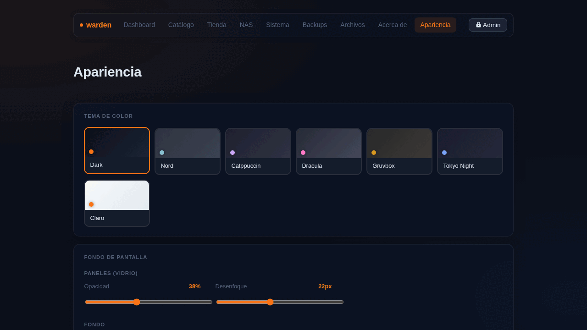

Apariencia¶

La sección Apariencia personaliza el aspecto visual del panel. Todo se guarda en localStorage del navegador — sin recargar la página y sin guardar nada en el servidor.
Temas de color¶
7 temas disponibles que cambian toda la paleta de colores del panel en tiempo real:
| Tema | Acento |
|---|---|
| Dark | Naranja — el tema por defecto |
| Nord | Azul ártico |
| Catppuccin Mocha | Lavanda |
| Dracula | Rosa |
| Gruvbox | Dorado |
| Tokyo Night | Azul índigo |
| Claro | Naranja sobre blanco |
El tema persiste en todos los dispositivos que usen el mismo navegador, sin parpadeo al cargar (anti-FOUC).
Fondos de pantalla¶
Desde dharmx/walls¶
Hacé click en Cargar fondos para ver una grilla de imágenes desde el repositorio dharmx/walls. Se cargan 96 imágenes aleatorias vía GitHub API y se cachean 24 horas en tu navegador — sin descargar nada al servidor.
La grilla está paginada (12 por página) para que cargue rápido. Hacé click en cualquier imagen para aplicarla.
Desde el servidor¶
En Imágenes del servidor podés ingresar una ruta de tu server (por defecto /srv/warden/wallpapers) y explorar las imágenes que tengas guardadas ahí. Soporta .jpg, .jpeg, .png, .webp y .gif.
Desde tu equipo¶
El botón Elegir archivo abre el selector de archivos de tu equipo. La imagen se redimensiona automáticamente a máximo 1920px de ancho (JPEG 82%) antes de guardarse — para que no ocupe demasiado en el navegador.
URL personalizada¶
Pegá la URL directa de cualquier imagen en internet y presioná Aplicar URL.
Contraste automático¶
Cuando aplicás un fondo de pantalla, warden detecta su luminancia promedio usando canvas. Si la imagen es clara (luminancia > 48%), aplica automáticamente un scrim más oscuro sobre los paneles para que el texto siempre sea legible.
Ajustes de vidrio¶
Cuatro sliders para afinar el efecto visual:
Paneles (vidrio)¶
- Opacidad (5%–90%): qué tan sólidos se ven los cards y paneles. Bajo = más transparente.
- Desenfoque (4px–48px): intensidad del efecto frosted glass.
Fondo¶
- Brillo (20%–160%): oscurecer o aclarar la imagen/gradiente sin tocar el contenido.
- Desenfoque (0px–20px): difuminar el fondo para un look más suave.
Todos los ajustes son persistentes y se aplican sin parpadeo al cargar cualquier página.